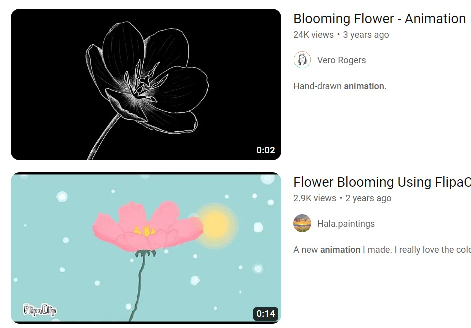

How I Went About It

What I did to keep refining this and what I found challenging was putting each element in the right place and make sure the colours lined up with each other.
I just started playing with numbers and values for pixels to make everything stay in place where I wanted it to.
I liked how this assignment challenged me to know where to place each div in order to make the flower appear at the front instead of the back.
This was my biggest challenge when doing this assignment, trying to figure out how
to bring certain things to the front and other to the back.
I wanted a simple story that showed the simplicity of what is like when a flower grows, from its beggining to its final blooming. More than anything I just researched other examples of how a flower grows but in a version that can be seen for children to have fun with it.